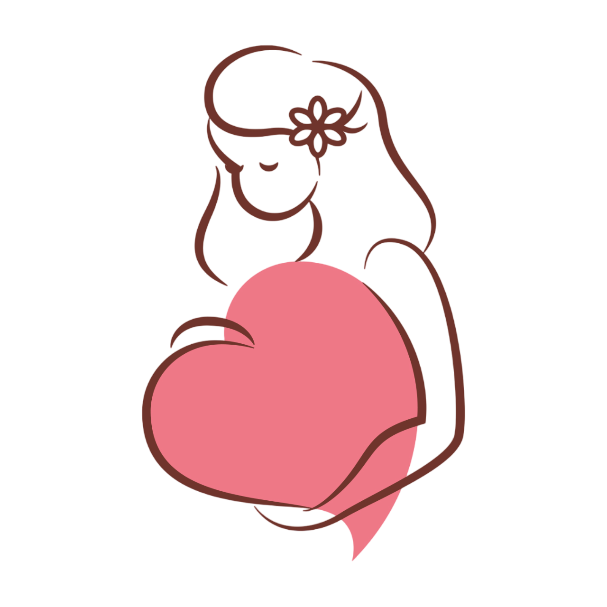
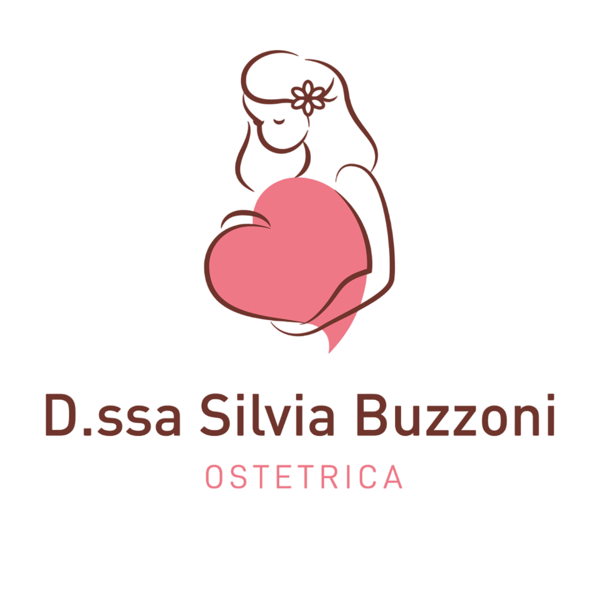

Chi sono
Servizi
Servizi per la gravidanza
Visita in gravidanza
Valutazione pavimento pelvico
Consulenza ostetrica
Acquaticità in gravidanza
Corso pre parto
Servizi per il travaglio ed il parto
Accompagnamento in sala parto
Assistenza al parto a domicilio
Servizi nel post parto
Consulenza allattamento
Visita ostetrica nel post parto
Acquaticità neonatale
Corso di gruppo sullo svezzamento
Servizi in tutte le fasi di vita della donna
Riabilitazione pavimento pelvico
Pap test, tamponi vaginali e cervico vaginali
Dove mi trovi
Contatti
Tariffario
Prenota Appuntamento